포클랜드 전쟁 잡담 - SS Atlantic Conveyor의 격침
게시: 2022-05-12T06:30:30+09:00
<1인1실 호화여객선을 타고 전장으로> 1982년 포클랜드 전쟁이 발발했을 때, 몰락해가던 영국 해군은 1만에 근접하는 지상군을 수송할 여력이 없었음. 그래서 40여척의 민간 화물선을 징발. 이를 STUFT (Ships Taken Up From Trade)라고 불렀음. 그 중 대표적인 것이 여객선 Queen Elizabeth II와 Canberra. 각각 병력 3천과 2천4백을 수송. 이런 민간 선박들은 그래도 전쟁터에 간다고 긴급히 이런저런 개조를 했는데, 대표적인 것이 주요 부위에 철판을 덧대어 조금이라도 방탄 효과를 주는 것과 함께 해상보급을 위한 케이블 장치 등. QE2에는 헬기 착함판과 함께 자기 반응 기뢰에 대응하기 위해 전자석을 이용한 반자기 장치도 갖추었고, (비록 화재 위험성에는 오히려 더 안좋았지만) 병사들의 군홧발에 비싼 카펫이 망가는 것을 방지하기 위해 2천장의 합판을 바닥에 덧댐.
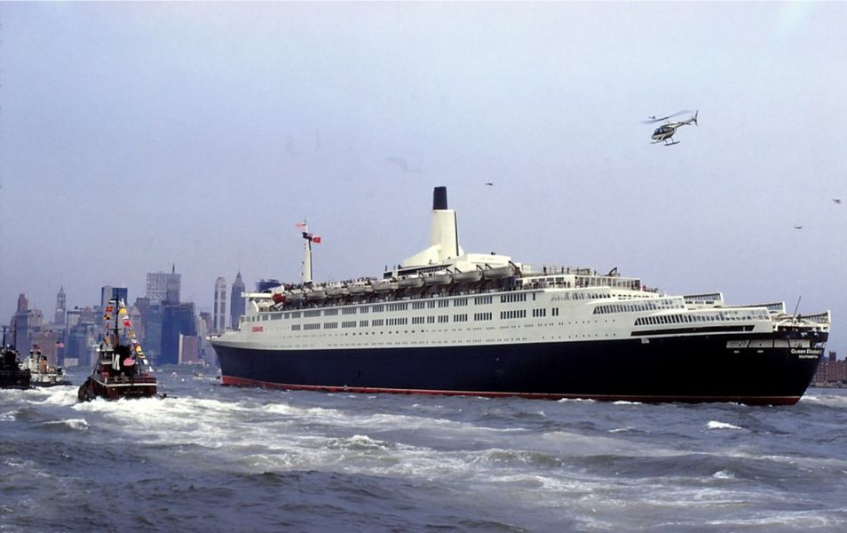
QE2에는 제5 보병여단이 탑승했는데, 선실이 충분해서 많은 병사들이 1인1실의 호사를 누림. 당시 병사들은 대부분 '실제 전투에 투입되는 일은 없을 것이고, 호화여객선 QE2를 타고 남대서양 일주를 하는 사이 평화협정이 맺어져 그냥 돌아오게 될 것'이라고 생각했다고. 포클랜드에서 아직 멀리 떨어진 사우스조지아 섬 근해에서 3천톤짜리 상륙지원함들에 옮겨타면서 'X 됐다'라는 것을 실감. 이떄 이런 화물선의 선원들은 민간선원이었을까 해군들이 대체했을까? 기존 민간선원들을 그대로 쓰면서 일부 해군 요원들이 추가로 탑승. 대부분 민간선원들은 자원했으며, 병사들이 선상에서 수행하는 이런저런 훈련도 의외로 진지하게 따라 했다고. 가령 어떤 선장은 자기 배의 주방장이 쉬는 시간에 기관총 분해조립을 혼자 연습하고 있는 것을 보고 깜놀.
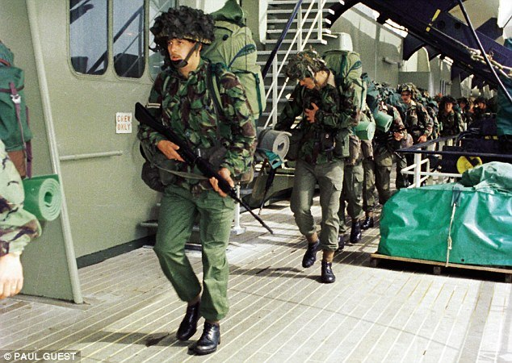 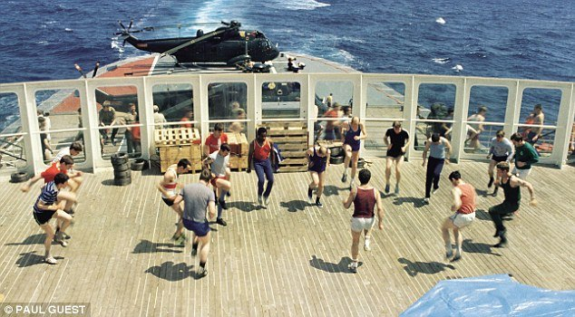
<화물선이 항모가 되다?> SS Atlantic Conveyor는 1만5천톤급 컨테이너 화물선. 수직이착함이 가능한 14대의 Harrier 전투기들과 4대의 Chinook 등 각종 헬리콥터의 수송을 위해 징발.
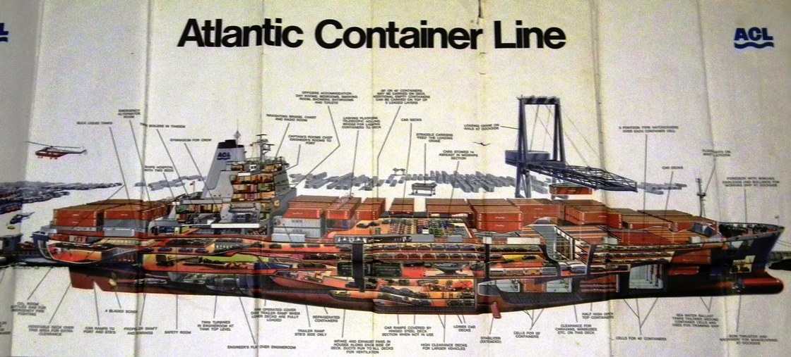 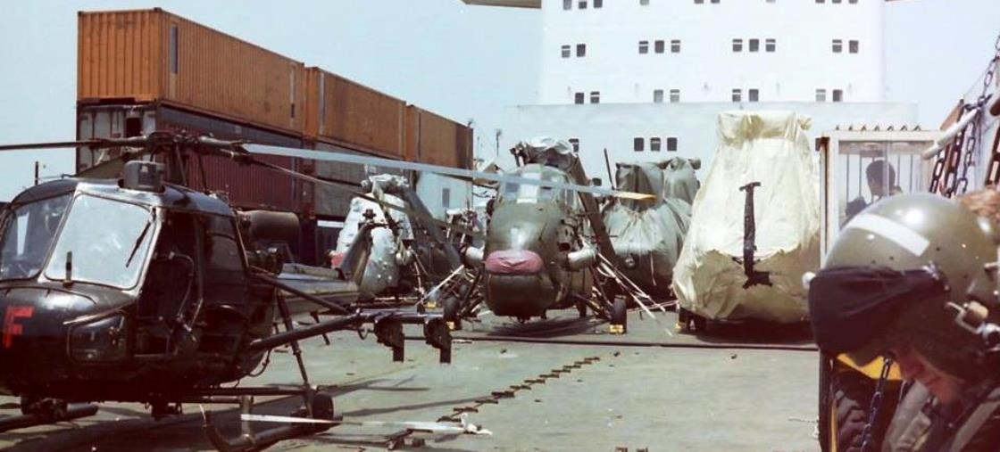
이 화물선도 화물창에 철판을 덧대고 해리어 착함을 위한 보강 장치를 하고 해상보급 장치를 갖추는 등 간단한 개조를 한 뒤 영국 육해군 요원 100여명을 태우고 출항. 원래는 순수하게 해리어와 헬기들만 싣고 가려 했는데, 선창에 빈 공간이 많이 남은 것이 아까워, 여기에 추가로 각종 항공 폭탄과 육군용 로켓탄과 대전차 미사일, 소화기 탄약도 잔뜩 실음. 이것이 나중에 배의 상실에 큰 원인이 됨. 단, 출항 할 때는 해리어 전투기들은 전혀 싣고 있지 않았음. 이유는 아직 해리어 전투기들이 출발 준비가 안 되었기 때문. 이 전투기들은 나중에 공중 급유를 받아가며 영국에서 적도 인근 아센시온 섬까지 날아와 거기서 비로소 아틀랜틱 컨베이어에 착함. 당시 이 비행이 해리어의 최장 비행기록을 깬 것이라고.
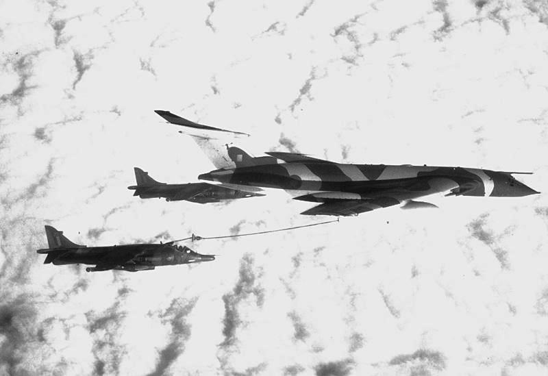
흔히 수직이착륙기(VTOL)는 그냥 갑판만 있으면 되니까 화물선도 항모 노릇을 할 수 있다고 생각하지만 전혀 아님. 화물선에는 일단 엘리베이터가 없음. 따라서 아틀랜틱 컨베이어에서는 모든 해리어들을 그냥 갑판에 보관. 그래서 비바람과 소금물에 그대로 노출됨. 그런 소금물로부터 조금이라도 보호를 하기 위해 화물선 갑판 양현에는 컨테이너를 쌓아올려 방호벽을 만들어주고, 방수포로 전투기를 꽁꽁 감쌈. 그러나 해리어 1대와 헬기 1대는 비상 상황에 대응하기 위해 출격 상태로 보관.
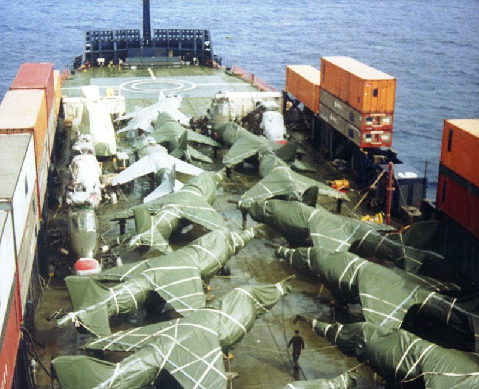
그리고 화물선에는 활주로가 없기 때문에 이함이 매우 곤란. 특히 아센시온처럼 적도 인근의 더운 지방에서는 수직 착함까지도 위태위태할 정도. 수직이함도 가능은 하지만 그건 무장을 모두 비우고 연료도 최소한의 양만 주입한 상태에서만 가능. 그런 상태로 해리어들은 애틀랜틱 컨베이어에 착함한 것이고, 나중에 포클랜드 인근에서 HMS Hermes와 HMS Invincible로 옮겨갈 때도 그런 식으로 이함.
<42 + 22 = 64> 해리어들을 항모 허미즈와 인빈서블로 날려보낸 SS Atlantic Conveyor는 한동안 항모 그룹과 함께 움직임. 애틀랜틱 컨베이어에는 아직 헬기들이 가득 탑재되어 있었는데, 이들 헬기, 특히 4대의 시누크 헬기는 4일 전인 5월 21일 산 카를로스에 상륙한 영국 지상군을 핵심 전장이 될 포트 스탠리 근처로 재빨리 수송하기 위한 핵심 장비. 그러나 이 모든게 날아가버리는 사건이 5월 25일 발생. 5월 25일은 영국 해군에게 재앙의 날. 5월 21일 산 카를로스에 영국군이 상륙한 이후 그 일대의 영국 해군은 며칠간 계속 아르헨티나 공군의 폭격을 받아 많은 희생을 냈고, 그래서 산 카를로스 일대를 bomb alley (폭탄 골목)이라고 불렀음. 그런데, 5월 24일 하루는 잠잠. 그래서 이제 아르헨티나 놈들도 공군력 피해가 심해서 질렸나보다 라고 생각. 영국 해군에게 가장 중요한 것은 2척의 항모를 지키는 것이었는데, 구축함들과 프리깃함들이 계속 희생되는 바람에 그 방어가 점점 힘들어짐. 그래서 영국 해군이 채용한 방식이 몸빵. 장거리 대공 미쓸을 갖춘 Type 42 구축함과 단거리 대공 미쓸을 갖춘 Type 22 프리깃함을 한쌍으로 'Type 64' (42 + 22 =64)라고 명명하고 아르헨티나 공군기들이 날아오는 저 서쪽에 미끼로 던져놓는 것. 이렇게 산 카를로스 북서쪽에 전개된 구축함 HMS Coventry(사진1,2)와 프리깃함 HMS Broadsword(사진3)는 모두 아르헨티나 스카이호크들의 집중 공격을 받음. 언제나 그랬듯이 영국제 대공 미쓸들은 결정적인 순간에 모두 제 구실을 못하거나 고장을 일으켰고, 심지어 20mm 오리콘 대공포도 탄막힘이 발생하여 이들은 병사들의 소총과 경기관총으로 반격. 결국 코벤트리는 침몰.
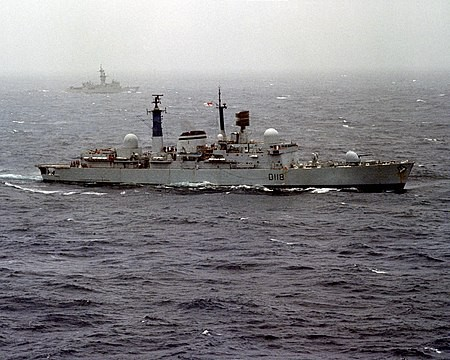 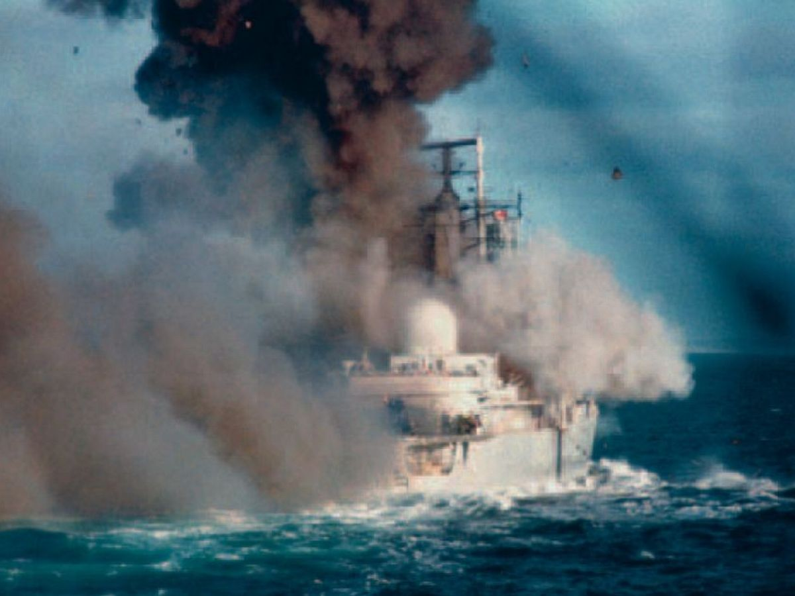 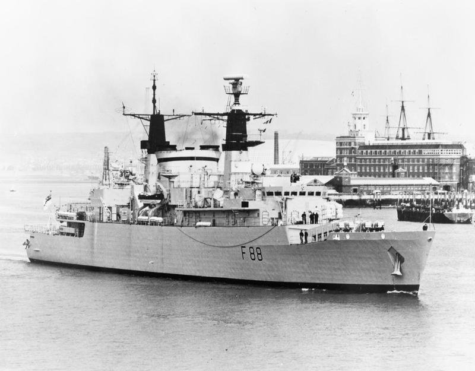
그러나 이들이 이렇게 몸빵으로 항모를 지켜내는 동안, 진짜 항모 killer가 전혀 예상하지 못한 곳에서 날아들고 있었음.
<영국놈들만 똑똑한 건 아니다> 영국 해군은 항모들의 위치를 감추기 위해 필사적. 포클랜드 섬에는 아르헨티나 공군의 AN/TPS-43 레이다가 있어서 영국 항모 그룹은 포클랜드 섬 인근에는 얼씬도 하지 않았음. 아르헨티나의 레이더가 수평선 너머의 항모들을 탐지할 수는 없었지만 항모에서 이착함하는 해리어들의 움직임은 볼 수 있었음. 영국 해군도 똑똑한 사람들이라서 그럴 알고 있었기 때문에, 해리어 전투기들에게는 항모에 접근할 때는 80km 밖에서부터 아르헨티나 레이더의 탐지에서 벗어나도록 저고도로 날도록 지시. 그러나 아르헨티나 공군도 똑똑한 사람들이라서 며칠간 해리어들의 움직임을 본 뒤, 해리어들의 움직임이 전혀 안 보이는 좁은 구역에 항모가 있다고 확신. 그 확신에 기반하여 5월 25일, 코벤트리가 헛되이 다구리를 당하고 꼬로록하는 사이에 항모 킬러인 Super Etendard 2대에 마지막 남은 Exocet 미쓸 1방씩을 탑재하여 날려보냄.
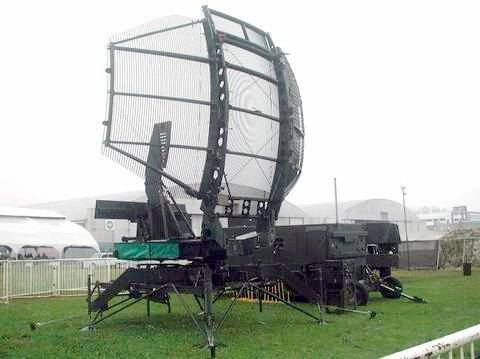 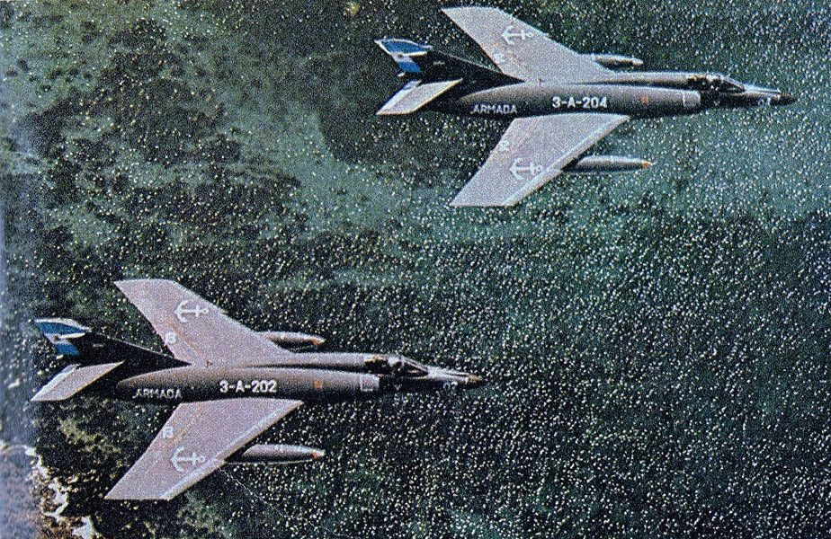
아르헨티나는 영국 해군이 항모를 보호하기 위해 아르헨티나 본토와 항모 사이에 구축함들로 경계선을 치고 있다는 것도 알고 있었으므로 이번에는 아예 쉬페르 에땅다르들이 공중급유를 받아가며 아예 멀찍이 북서쪽으로 빙 돌아 날아간 뒤, 레이더가 '희한하게도 저쪽 구역에는 해리어들의 활동이 전혀 없다'라고 지목한 그 구역을 향해 남하함. 5월 25일 저녁, 이렇게 서쪽이 아니라 북쪽에서 쉬페르 에땅다르들이 날아오고 있다는 것을 영국 항모들은 전혀 몰랐고, 알았다고 해도 막을 방법이 전혀 없었음. <모진 놈 옆에 있다가 미쓸 맞는다> 이런 식으로 영국 항모 HMS Hermes로부터 바로 60km까지 날아온 Super Etendard들은 영국 항모들이 내보내는 레이더 신호를 감지하고 자신들의 짐작이 맞았다고 확신. 이때 슬쩍 pop-up 기동으로 고도를 높인 뒤 프랑스가 자랑하는 Agave 레이더로 전방을 스캔. 눈 앞에 펼쳐진 것은 속절없이 무방비로 늘어선 영국 항모들과 구축함들. 이들은 기뻐 공중제비를 돌며 목표물을 엑조세 미사일에 입력한 뒤 다시 고도를 낮추고 곧장 미사일 발사. 그러나 이들도 이런 경험이 처음이다보니 너무 흥분하여 어느 것이 항모인지 어느 것이 구축함인지 충분히 식별하지 않고 그냥 처음 목표물을 골랐음. 게다가 이들이 pop-up 및 레이더 스캔을 할 때의 그 신호를 영국 함대도 즉각 포착. 영국 함대에서는 별안간 모든 함선에 'handbrake' 명령이 내려짐. 이는 아르헨티나 공군의 Agave 레이더 신호가 감지되었다는 뜻으로, 영화 속 자동차 추격신에서 흔히 보듯 핸드 브레이크를 걸면서 급선회하라는 것. 이들은 모두 급선회하면서 알루미늄 채프를 일제히 쏘아올려 레이더 유도 방식인 엑조세 미사일을 혼란시키려 노력. 실제로 그 덕분에 엑조세 미사일은 목표물을 못 찾고 빗나감. 문제는 그 빗나간 엑조세들이 근처에 있던 엉뚱한 배를 새로운 목표물로 인식하고 날아갔다는 것. 바로 며칠 전에 해리어들을 싣고 왔던 SS Atlantic Conveyor. 일설에는 한방은 바다에 떨어졌다고 하고 또 다른 설로는 두방 모두 애틀랜틱 컨베이어에 꽃혔다고 하는데, 아무튼 아틀랜틱 컨베이어는 엑조세를 얻어맞고 화재 발생. 애틀랜틱 컨베이어에서는 총 12명이 사망.
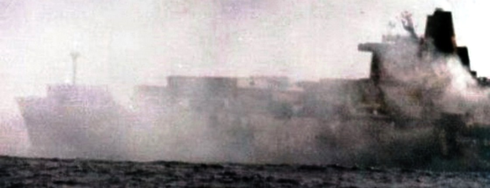
이 배에는 영국 지상군과 그 장비를 실어나를 시누크 헬리콥터와 웨섹스 헬리콥터 등과 함께 각종 폭탄과 탄약이 잔뜩 실려 있었음. 딱 한대, Bravo November (BN)이라는 식별 마크를 달고 있던 시누크 헬기 한대만 공중에 떠 있었기 때문에 참화를 피함. 나중에 이 BN 시누크는 유일한 생존자로 유명세를 탔고 이라크 및 아프간 전쟁에도 참전. 현재도 현역인데 곧 퇴역할 예정이라고.
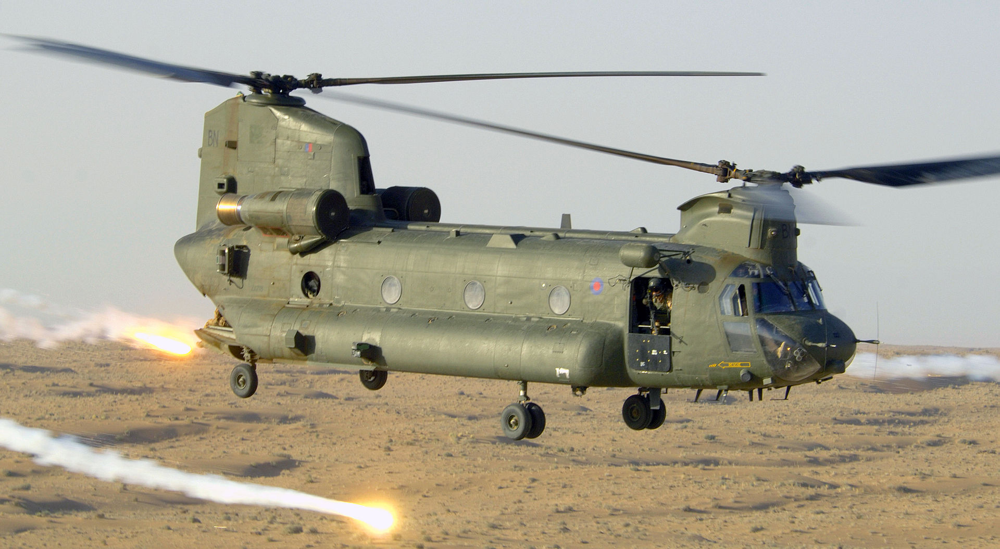
아래 사진1,2는 며칠 뒤인 6월 2일, 해군 장교가 런던 각료회의에서 손으로 그려가며 설명한 아틀랜틱 컨베이어의 피격 상황 설명 자료. 당시엔 극비 문서였다가 지금은 기밀 해제됨. HMS Hermes가 불과 수 km 옆에 있는 것이 보임.
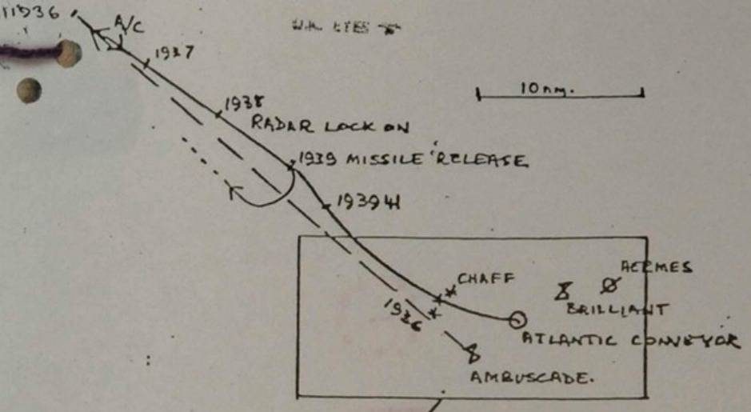 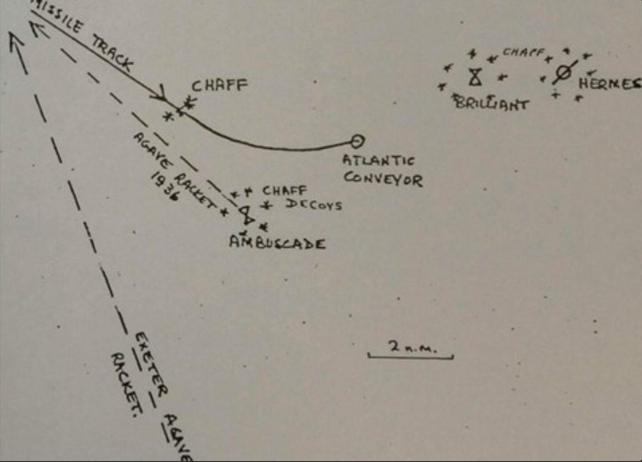
그런데 애틀랜틱 컨베이어의 침몰은 며칠 뒤 죽지 않아도 되었던 더 많은 사람들의 죽음으로 이어짐. 바로 Goose Green 전투.